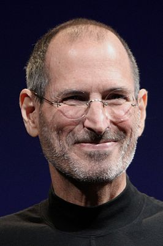

Steve Jobs werd op 24 februari 1955 geboren in San Francisco. Over zijn biologisch ouders is weinig bekend
Zijn biologische moeder zou een studente zijn geweest en zijn vader een Syrische politieke wetenschapper of hoogleraar
Na zijn geboorte werd hij ter adoptie gesteld aan Paul Jobs en Clara Jobs-Hagopain
Al op jonge leeftijd ontdekte Steve de wereld van elektronica
Maar nadat hij zijn middelbare school had afgerond, meldde hij zich bij het Reed College om te gaan studeren
Zijn schoolwerk stond echter niet hoog op zijn prioriteitenlijst en al na zes maanden stopte hij met zijn opleiding
hij is overleden op 5 oktober 2011